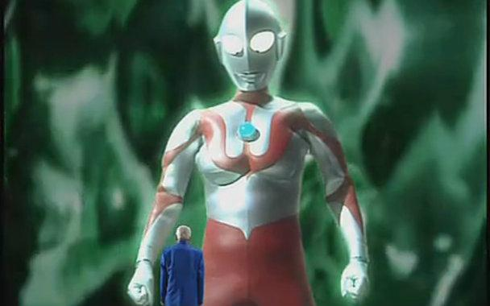
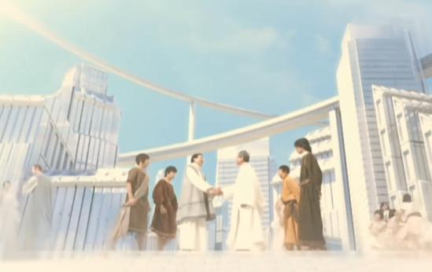

奥特曼的诞生
平行世界的悖论  虽然说，不同世界观的奥特曼诞生的缘由不同，但是不得否定的是，现在的圆谷在做设定，就是对全部奥特曼世界观的统一，不管这个奥特曼存在于哪个世界，哪条平行线，诞生可以看作是同一个宇宙，但因为某些原因被分去了不同的世界，简单说，反正奥特曼是超人，无所不能，因此任何一个世界的奥特曼同时出现在一个世界也不奇怪。起码从近期的奥特曼剧场版中，都表现了这一点。又或者说，就算是别的诞生方式出现的奥特曼，最终还是能因为各种原因出现在同一个世界中。 因此即便迪迦被设定为“地球上自古就有的巨人”，但也可以归纳到最早出现在诞生奥特曼的星球上，后来因为某些原因而来到地球。 等离子塔一说  这个说法源自奥特曼的剧场版【奥特超银河传说】，说的是M78星云世界观中奥特曼的诞生的契机，这个说法也是目前为止最为官方的解释奥特曼诞生的说法，最为官方和科学。 这个说法是，在27万年前的M78星云的某个星球上，有着一批和地球人类人类差不多长相的“人”，只是拥有比地球文明更高的科技水平，突然，这个星云的恒星爆炸了，这个星球面临灭顶之灾，但那里的人用高度的科技创造出了人工太阳，命名为“等离子火花塔”，虽然依靠火花塔的力量，使得行星没有面临灭亡，但却因为过于强大的能量直接照射在人们身上，人们慢慢变成了巨大的超人。 |
Welcome to